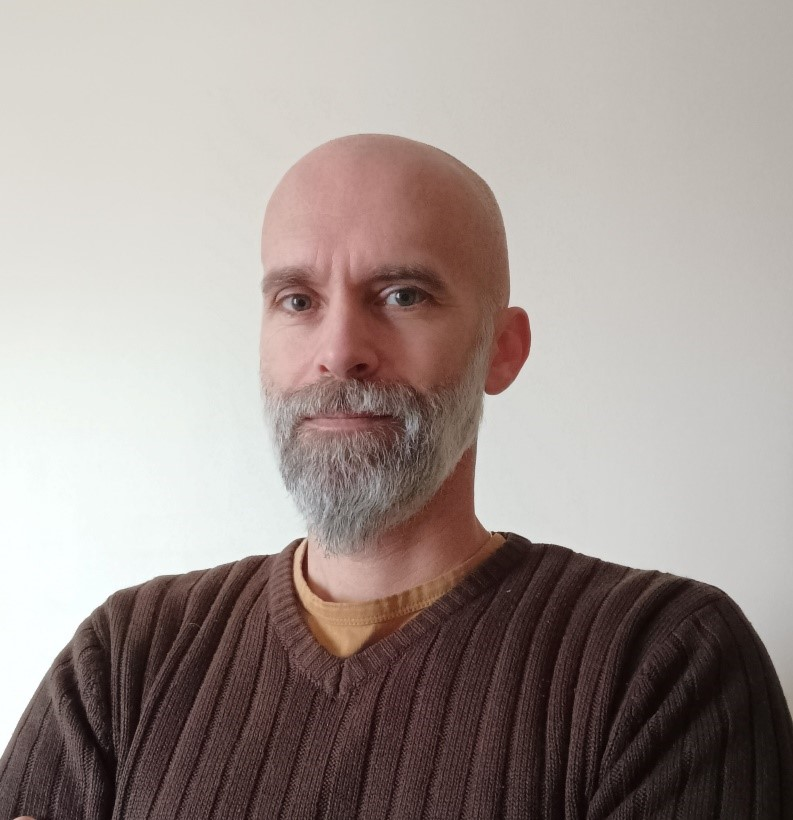

Qui suis-je ?
Désireux depuis longtemps de devenir indépendant, je me suis lancé dans l'entrepreneuriat fin 2022.
Attaché au service de proximité, j'ai naturellement domicilié mon entreprise dans la commune qui m'a vu grandir, Vaugneray.
Ma mission : offrir aux habitants de mon territoire des prestations de qualité, en accord avec mes valeurs :
respect, écoute et bienveillance.
L. RETRU, fondateur dirigeant